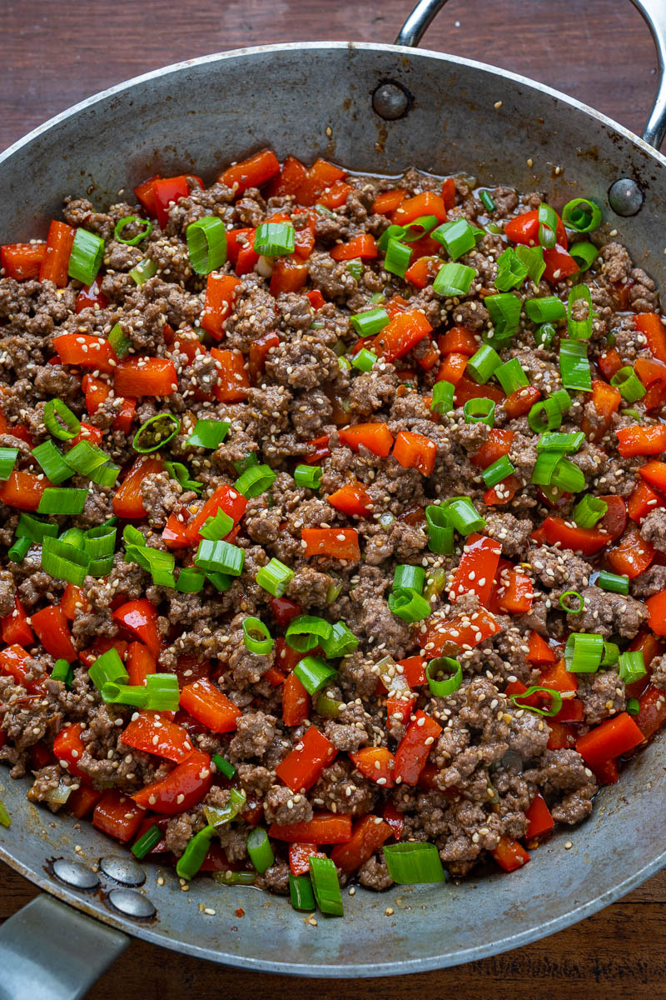

Szechuan Beef
Home

Szechuan beef is a traditional Chinese recipe, but here we put our own twist to it by using ground beef, making it an ideal, cheap and easy week night dish.
Ingredients
For the stir fry
- 800 grams ground beef
- 1 dl corn starch
- 1 dl neutral oil
- 25 dried red chilies
- 2 tablespoons grinded szechuan peppercorns
- 4 bell peppers of any color
- 2 onions
- 4 cloves minced garlic
- 1 tablespoon minced ginger
For the sauce
- 5 tablespoons soy sauce
- 3 tablespoons hoisin sauce
- 3 tablespoons brown sugar
- 2 tablespoons sesame oil
- 2 tablespoons corn starch
- 1,5 dl water or beef broth
Steps
- Chop vegetables into evenly sized largeish chunks
- Brown the beef in a large pan until almost well done
- Mix beef with corn starch in a bowl
- Heat oil in the pan and toss corn starch coated beef back in, cook until nice and crispy on the outside
- Move beef again from the pan and set aside, try to drain oil from the beef and keep it in the pan
- Add vegetables into the pan with chilies and peppercorns
- When vegetables have softened a bit, add garlic and ginger, then cook for 1 more minute
- Add beef back to the pan, mix a bit and let cook
- While beef and vegetables are cooking, mix the sauce in a bowl and toss into the pan when ready
- Cook for couple more minutes until sauce thickens
- Serve on top of rice and enjoy!